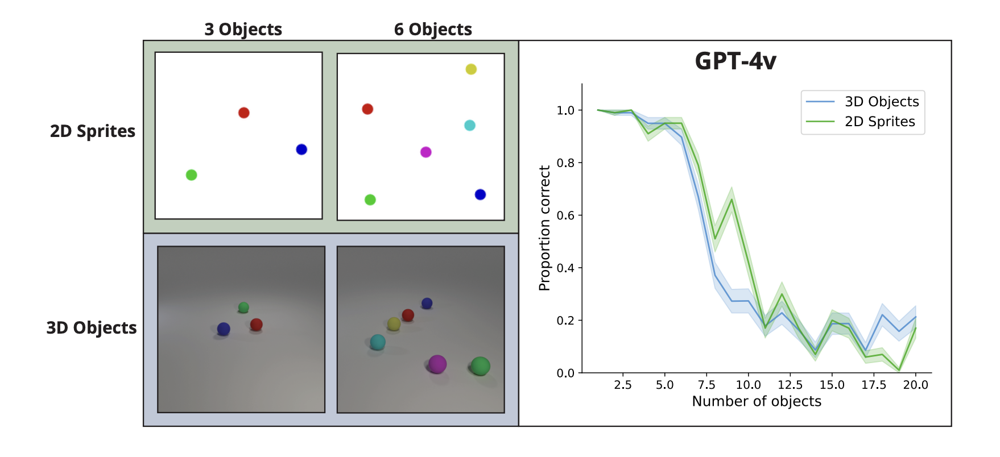

Computational Neuroscience Research @ Princeton Neuroscience Institute, Cohen Lab

Undergraduate Researcher in the Neuroscience of Cognitive Control Lab at the Princeton Neuroscience Institute, mentored by Dr. Jonathan D. Cohen.
My research involves leveraging mathematical frameworks, such as that of group theory, to explore specific problems in machine learning and natural language. This includes understanding the limitations of large language models in a variety of settings, including the limitations of vision language models in multi-object reasoning tasks.
Recent Work: "Understanding the Limits of Vision Language Models Through the Lens of the Binding Problem" (NeurIPS; submitted)